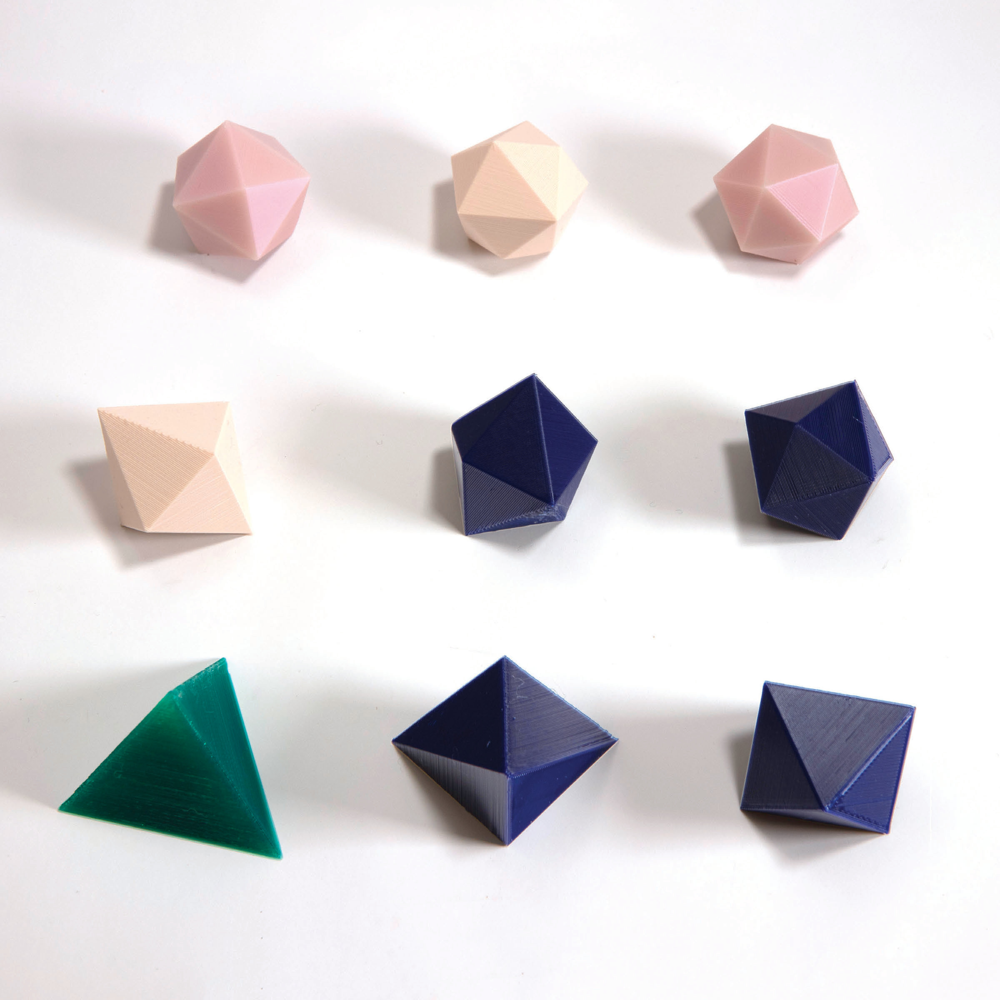

Alba Marina Málaga Sabogal
Audition pour le poste de maître de conférences n°4730
25 mai 2020
Études et vie professionnelle


Les systèmes dynamiques
- Évolution déterministe à court terme, connue
- Questions concernant l’évolution à long terme
Exemple: les rotations du cercle
Vue de plusieurs itérations.
Thm (Poincaré) Une rotation du cercle est périodique si et seulement si elle est rationnelle. Sinon, elle est ergodique.
Exemple: les billards

Le dépliage des billards

Surfaces de translation et billards «infinis»

Escalier à recollement variable
Surfaces de translation et billards «infinis»

Escalier à hauteur variable
Surfaces de translation et billards «infinis»

Wind-tree
Ma thèse
J’ai soutenu en 2014 à Orsay une thèse de doctorat intitulée
Étude d’une famille de transformations
préservant la mesure de \(ℤ × 𝕋\).
sous la direction de Jean-Christophe Yoccoz (Collège de France).
Résultats sur \(ℤ × 𝕋\) \(\longleftrightarrow\) escaliers infinis.
Thm (2014) Direction fixée, escalier générique:
dynamique conservative, minimale et ergodique.
Mes travaux avec Serge Troubetzkoy
Nous poussons beaucoup plus loin les thèmes de ma thèse.
Thm (2015) Génériquement, la dynamique du wind-tree est minimale dans un large ensemble de directions.
Thm (2016) Génériquement, la dynamique du wind-tree dans presque toute direction est ergodique.
Thm (2016) La dynamique d’un billard VH est faiblement mélangeante dans un large ensemble de directions.
Thm (2017) Génériquement, la dynamique du wind-tree est d’indice ergodique infini dans un large ensemble de directions.
Thm (2019) Génériquement, la dynamique des surfaces en escalier est uniquement ergodique dans un large ensemble de directions.
Thm (2019) Génériquement, la dynamique du wind-tree est uniquement ergodique dans un large ensemble de directions.
Future recherche au sein du LAMA
Équipe: analyse harmonique
On y mélange analyse, probabilités, fractals, et dynamique symbolique.
Collaborations possibles: Mihalache, Liao, …
Équipe Probabilités et statistiques: Julien Brémont, …
Équipe Géométrie et courbure: Benoît Kloeckner
Découvrir: analyse multifractale, applications et interactions avec systèmes dynamiques.
La forte présence du LAMA dans la communauté m’attire: GDR AMF, écoles à Porquerolles, séminaires SCAM et COOL.
Cours, cours intégrés, TD
Enseignements déjà dispensés:
- Équations différentielles
- Mathématiques numériques avec Python
- Calculus
- Analyse
- Calcul formel avec SageMath
- Structures algébriques
- Gestion de contenu avec Wordpress
- Algèbre linéaire
- Calcul vectoriel
- Calcul intégral
- Programmation orientée objet avec Java
- Introduction à l’informatique avec C++
Cours de mathématiques à la FSEG à Créteil
Bases mathématiques de modélisation économique et de gestion,
en licence. Dans les maquettes actuelles:
| Parcours amenagé |
Mathématiques |
|
Statistiques descriptives I |
| L1 |
Mathématiques |
|
Statistiques et outils informatiques I |
| Passerelle |
Outils mathématiques |
|
Statistiques descriptives sur Excel |
| L2 |
Mathématiques |
|
Probabilités, estimation et tests |
| L3 |
Mathématiques des systèmes dynamiques |
|
Processus stochastiques en finance |
|
Optimisation dynamique |
Master: science des données, apprentissage automatique, …
Quelques idées de projets avec des étudiants en économie
- Recensements de population universels vs randomisés
- Résultats Pisa et politiques éducatives des pays de l’OCDE
- Répartition des revenus: outils d’analyse,
vision synchronique et diachronique
- Les systèmes d’imposition et leur évolution
- Croissance économique: vision à court terme et long terme
- Le coût de la santé
- Le financement des retraites
Médiation et diffusion scientifique
 \(\sim\)
\(\sim\) 30 expositions, forums, salons, exposés, …
Médiation et diffusion scientifique

Objets mathématiques
Médiation et diffusion scientifique

Polyèdres d’Akiyama
Pour finir…
| continuité et ouverture dans la recherche |
un vrai souci de l’accessibilité |
fibre «maker» |
| intérêt en médiation scientifique |
enseignement dans le respect |
parcours polyvalent |
J’ai à cœur de m’intégrer dans la recherche au LAMA et dans l’enseignement à la FSEG.